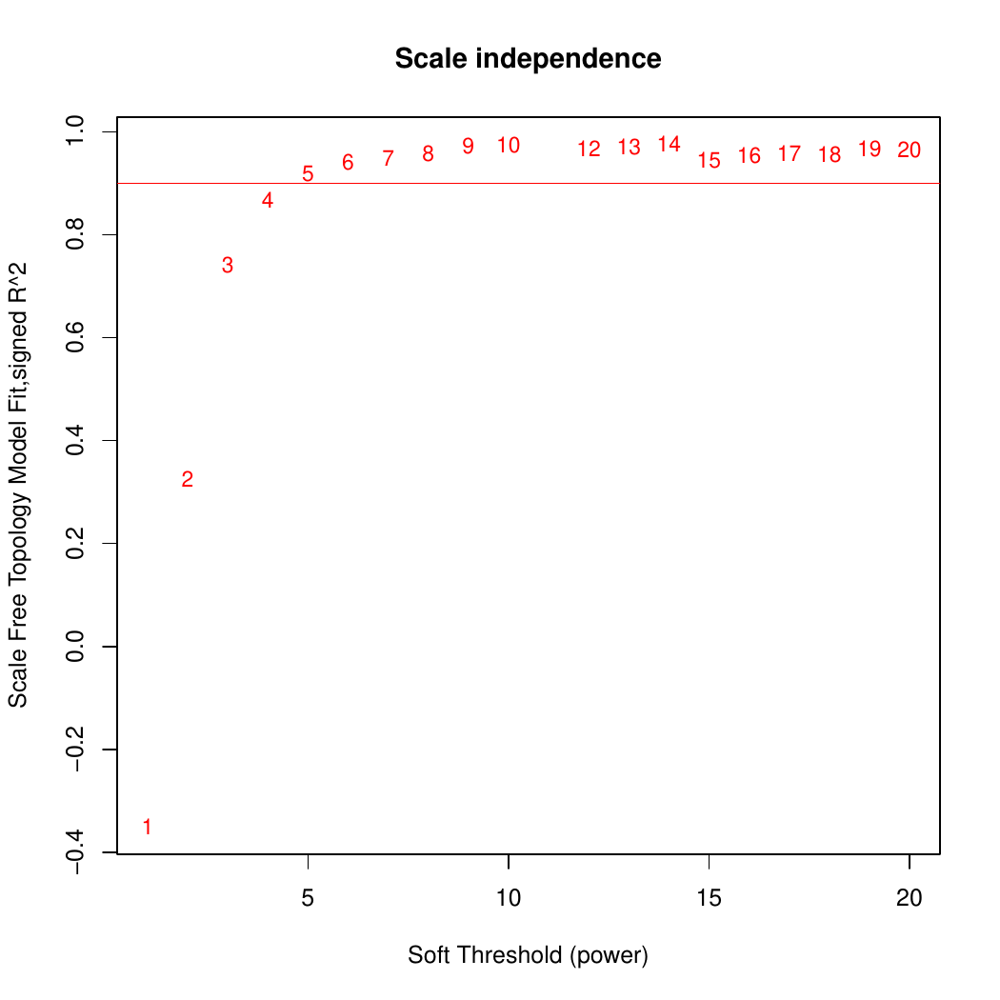
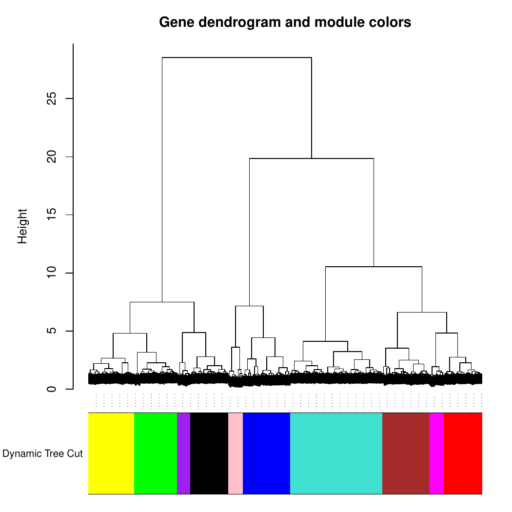
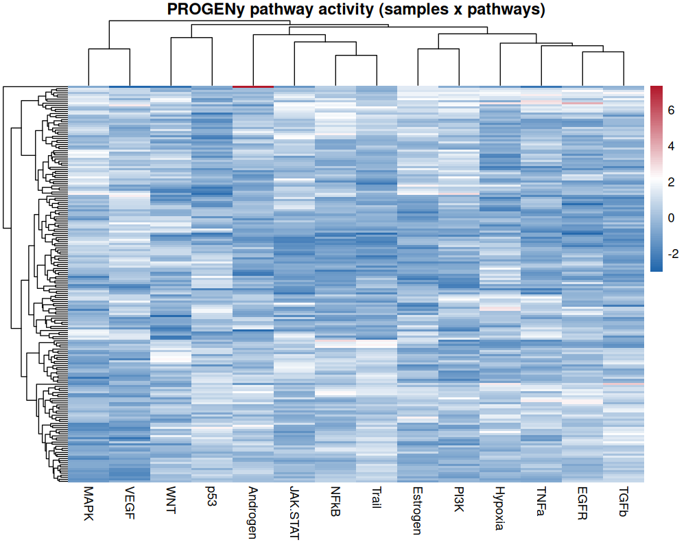

Feature computation
a1_feature_computation.Rmd
library(CellTFusion)
#> CellTFusion combines two families of features computed
from bulk RNA-seq data: cell type deconvolution and
transcription factor (TF) activity, the latter
summarized into TF co-activity modules. Pathway activities are computed
alongside. This tutorial runs each step on its own, with its key
arguments and outputs. All of them are run automatically, in this order,
by the CellTFusion() wrapper (see Running the full pipeline).
Load the example data:
raw.counts <- CellTFusion::raw.counts.tuto
traitdata <- CellTFusion::traitdata.tutoNormalization
TF and pathway activities are computed from log2-transformed TPM
values. Deconvolution methods use TPM without the log transform; this is
handled internally by compute.deconvolution().
counts.norm <- data.frame(ADImpute::NormalizeTPM(raw.counts, log = TRUE))Cell type deconvolution
Cell type proportions are estimated with
compute.deconvolution() from the companion package multideconv,
which runs several deconvolution methods (Quantiseq, Epidish,
DeconRNASeq, DWLS and CIBERSORTx) with multiple signatures. The result
is a matrix of samples x method-signature-cell type features.
Key arguments:
-
raw.counts— count matrix (genes x samples). -
methods— deconvolution methods to run. -
normalized— whether to TPM-normalize the counts before deconvolution. -
credentials.mail/credentials.token— CIBERSORTx credentials, only needed if"CBSX"is inmethods. -
return— ifTRUE, saves the matrix inResults/.
deconv <- multideconv::compute.deconvolution(
raw.counts,
methods = c("Quantiseq", "Epidish"),
normalized = TRUE,
return = FALSE
)TF activity
compute.TFs.activity() infers the activity of each TF in
each sample from the expression of its targets, using the consensus
score of decoupleR (Badia-i-Mompel et al.
2022) and a TF-target network (regulon).
Key arguments:
-
RNA.counts— normalized expression matrix (genes x samples), typically log2(TPM + 1). -
TF.collection— source of the regulon:-
"CollecTRI"(default) (Müller-Dott et al. 2023) and"Dorothea"are curated regulons fetched from OmnipathR. Each collection is cached in its own file inResults/(TF_target_collection_<collection>.csv) and reused in later runs. -
"ARACNE"uses a data-driven, cohort-specific network inferred with ARACNe (Margolin et al. 2006), which derives TF-target edges from the mutual information between expression profiles across a cohort and removes indirect interactions. This is useful for a large, homogeneous cohort in which curated interactions may not hold. The network is read frominput/ARACNE/<cancer.type>/network/network.txt(relative to the working directory), a tab-separated file withRegulatorandTargetcolumns; the sign of each interaction is taken from the Spearman correlation between the TF and its target.
-
-
min_targets_size— minimum number of targets per regulon; TFs with fewer targets are dropped (default 5). -
universe— optional user-supplied regulon (data frame withsource,targetandmorcolumns), used instead of fetching one. -
scale— ifTRUE(default), z-scores TF activities across samples.
tfs <- compute.TFs.activity(
RNA.counts = counts.norm,
TF.collection = "CollecTRI",
min_targets_size = 5,
return = TRUE
)To use your own regulon:
universe <- decoupleR::get_collectri(organism = "human", split_complexes = FALSE)
tfs <- compute.TFs.activity(counts.norm, universe = universe)To use a cohort-specific ARACNe network:
tfs_aracne <- compute.TFs.activity(
RNA.counts = counts.norm,
TF.collection = "ARACNE",
cancer.type = "skcm" # reads input/ARACNE/skcm/network/network.txt
)TF co-activity modules
compute.WTCNA() groups TFs with similar activity
patterns into modules using Weighted TF Co-activity
Network Analysis (WTCNA), an adaptation of WGCNA (Langfelder and
Horvath 2008) to TF activities. Each module is summarized by
one score per sample, its eigengene.
Key arguments:
-
TFs.matrix— TF activity matrix (samples x TFs), or a list of per-cohort matrices whenbatch = TRUE(see Multi-cohort analysis). -
network.type—"signed"(default),"unsigned","signed hybrid"or"distance". -
minMod— minimum number of TFs per module. -
corr_mod— correlation above which module eigengenes are merged. -
cor_type—"p"(Pearson, default) or"s"(Spearman; single-cohort mode only).
network <- compute.WTCNA(
TFs.matrix = tfs,
network.type = "signed",
clustering.method = "ward.D2",
minMod = 15,
corr_mod = 0.9,
return = TRUE
)With return = TRUE, diagnostic plots are saved in
Results/. First, the scale-free topology fit used to choose
the soft-thresholding power:

Then the TF dendrogram with module colors, before and after merging highly correlated modules:


network[[1]] ("TFs module matrix") contains
the module scores (samples x modules) used to build cell groups.
Pathway activity
compute.pathway.activity() estimates pathway activities
with a multivariate linear model from decoupleR (Badia-i-Mompel
et al. 2022) and the PROGENy pathway footprints (Schubert et al.
2018). If a list of gene sets is given, GSVA scores are
computed as well.
Key arguments:
-
RNA.tpm— normalized expression matrix (genes x samples). -
gene_sets— optional named list of gene sets; if provided, GSVA scores are returned in addition to PROGENy. -
paths— optional custom PROGENy-style table (source,target,weight); by default the human PROGENy model is used.
pathways <- compute.pathway.activity(
RNA.tpm = counts.norm,
return = TRUE
)The result is a samples x pathways matrix (14 PROGENy pathways by default). Clustering it gives an overview of which pathways co-vary across the cohort:

Reduction of deconvolution features
Deconvolution features from different methods and signatures are
often highly correlated. compute.deconvolution.analysis()
from multideconv groups correlated features of the same
cell type into subgroups, reducing redundancy before
building cell groups.
Key arguments:
-
deconvolution— output ofcompute.deconvolution(). -
corr— minimum correlation to group features into a subgroup. -
corr_type—"spearman"(default) or"pearson". -
batch— optional cohort vector; correlations then control for cohort (see Multi-cohort analysis).
dt <- multideconv::compute.deconvolution.analysis(
deconvolution = deconv,
corr = 0.7,
seed = 123,
return = FALSE
)Running the full pipeline
CellTFusion() runs all the steps above, then builds cell
groups and latent factors and characterizes TME states:
res <- CellTFusion(
raw.counts = raw.counts,
normalized = TRUE,
deconv_methods = c("Quantiseq", "Epidish"),
TF.collection = "CollecTRI",
cancer_type = "skcm",
corr = 0.7,
corr_mod = 0.9,
pval = 0.05,
file_name = "Tutorial",
return = TRUE
)A few defaults worth knowing:
-
deconv_methodsruns Quantiseq, Epidish, DeconRNASeq and DWLS by default; add"CBSX"(withcbsx.mailandcbsx.token) to also run CIBERSORTx. -
cancer_typeselects the TCGA meta-program reference ("blca","luad"or"skcm"); ifNULL, the meta-program mapping step is skipped. - Precomputed
deconv,dt,tfsandpathwayscan be passed to skip the corresponding steps (see Cell groups and latent factors).
res contains every intermediate object:
$Deconvolution, $TFs_matrix,
$TF_network, $Pathways_scores,
$Processed_deconvolution, $Cell_groups,
$Latent_spaces, $Cells_niches,
$TME_states and $Metaprograms_reference.